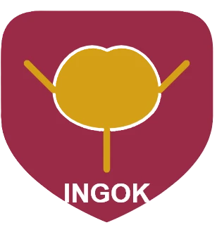

| 대학 정보 | |||
| 개요 | 역사 및 사학비리 | 개설 학과 | 전설의 자동차기계과 |
| 기타 정보 | |||
| 파탄난 현황 | 출신 인물 | 여담 (롤러코스터 버스) | 소재지(인곡군) |
대한민국 덕빈남도 인곡군에 위치한 사립 전문대학. 약칭은 인곡과기대 혹은 인곡대.
덕빈남도 내 군 지역 중 유일하게 존재하는 대학교다. (운진군에 국립덕남대학교 해양캠퍼스가 있긴 하지만, 순수 군 지역 소재 사립 전문대로는 이곳이 유일하다.) 한때 인곡군 산업 인력 공급의 핵심이었으나, 현재는 재단의 비리와 인구 감소로 인해 풍전등화의 처지에 놓여 있다. (...) 언제 폐교될지 매일매일이 서바이벌
1994년 인곡군의 기술 인재 양성을 목표로 개교했다. 초기에는 지역의 든든한 지원을 받으며 성장했으나, 재단 관계자들의 횡령과 사학비리가 터지면서 2020년대 들어 대학 기본역량 진단에서 최하위 등급을 받는 등 사실상 시한부 선고를 받은 상태다.
이사장 구속 및 이사회 해산 등 화려한(?) 전적을 거친 후, 현재는 교육부에서 파견된 관선이사 체제로 간신히 숨만 붙어 운영 중이다.
과거에는 20여 개에 달하는 학과가 있었으나, 현재는 지원자가 없어 대부분 씨가 말랐다.
| 학부 | 소속 학과 |
|---|---|
| 기계산업학부 (유일한 희망) | 자동차기계과 (정치 사관학교), 스마트설비과 |
| 보건복지학부 | 사회복지과, 실버케어과, 간호학과 (폐과 검토 중) |
| 디지털콘텐츠학부 |
사실상 자동차기계과를 제외하면 정상적인 수업 운영이 불가능할 정도로 학생 수가 처참하다. (...) 강제 통폐합 당한 학과들의 원혼이 캠퍼스에 떠돈다는 괴담도 있다.
인곡과학대학교의 알파이자 오메가.
이 학과에는 기묘한 징크스가 있는데, 정작 기계를 고치는 기능 명장은 단 한 명도 배출하지 못한 주제에 인곡군수는 두 번이나 배출했다.
본래 목적인 기술자 양성보다는 인곡군 정계 진출의 교두보 역할을 하고 있어, 지역 주민들 사이에서는 "차 고치는 법 배우러 갔다가 선거 운동 하는 법만 배워 온다"는 우스갯소리가 정설로 받아들여진다. 실제로 5, 6대 군수인 은성현과 현직인 강준영 군수가 모두 이 학과 출신이다. 기계를 고치랬더니 지역 정치를 고치고 있다
"인곡의 자부심에서 인곡의 골칫덩이로."
현재 대학의 재정 상황은 그야말로 파탄 직전이다. 재단 이사장의 교비 횡령 사건 이후 학교 환경은 90년대 수준에서 멈춰버렸으며, 실습 장비는 녹슬고 건물 벽면은 페인트가 벗겨진 지 오래다. 이사장 호주머니로 여는 미래
현직 군수인 강준영 역시 학창 시절 학교의 처참한 꼬라지열악한 환경과 재단의 비리를 목격하며 "내가 여기 왜 왔나" 싶을 정도로 현타가 씨게 왔다는 썰이 파다하다. 이 현타가 훗날 그를 정치로 이끌었다는 분석도 있다. (...)
정치적 아웃풋만큼은 4년제 명문대 부럽지 않은 라인업을 자랑한다. 그게 다 군수라서 문제지
| 성함 | 정당 | 직책 | 선수 | 학과 | 비고 |
|---|---|---|---|---|---|
| 은성현 | 새누리당 | 제5, 6대 인곡군수 | 재선 | 자동차기계과 | 인곡과기대 출신 군수 시대의 서막을 엶 |
| 강준영 | 국민의힘 | 제8대 인곡군수 | 초선 | 자동차기계과 | 현직. 대건공고 출신 엔진 덕후, 학창 시절 현타 경력 보유 |